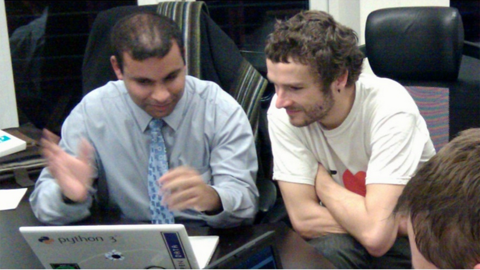
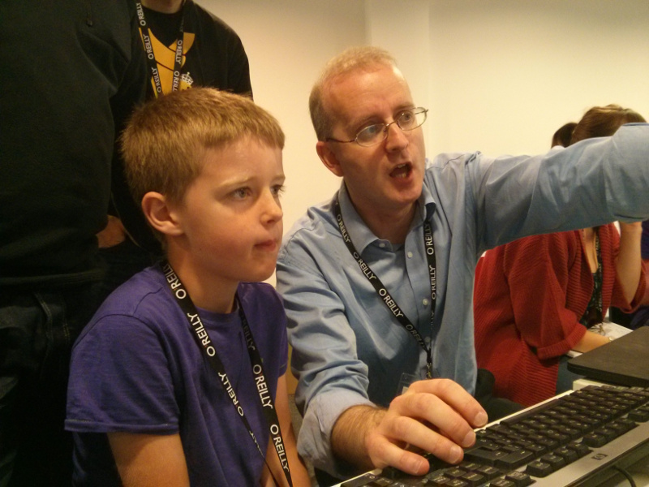

Teach
Learn
Program
Nicholas H.Tollervey / @ntoll


(Free download from O'Reilly's website)
A good developer is always learning and re-evaluating
in order to improve.
"Asking what sort of education and learning our community
supports is how we decide what sort of community we
become.
For it is through education and learning that we engage
with our future colleagues, friends and supporters."
Nicholas Tollervey, 2015. :-)




George Bernard Shaw
Teachers
Teaching is the one profession that
creates all the other professions.
Teaching is a calling (you're
certainly not doing it for the money or "perks").
Teaching is the hardest job
I've ever had to do.

Inventing the Future..?

My First Computer

1 Million 11-year olds

LIVE DEMO!!!!!

Homework
- Teach!
- Education Track!
- Slovakian micro:bit!
Due at PyCon Slovakia 2017
:-)
FQA
- Where / When? Via mail order in the summer.
- How much will they cost? No idea - but cheap.
- Where do I get the code / hardware details? Resources will be online after launch.
- What OS does it run? MicroPython runs bare metal with 16k RAM and 256k of flash.
- Where do I find out more?
- http://microbit-micropython.rtfd.org
- http://microbit.co.uk/
- http://microworldtour.github.io/
- http://github.com/ntoll/mu